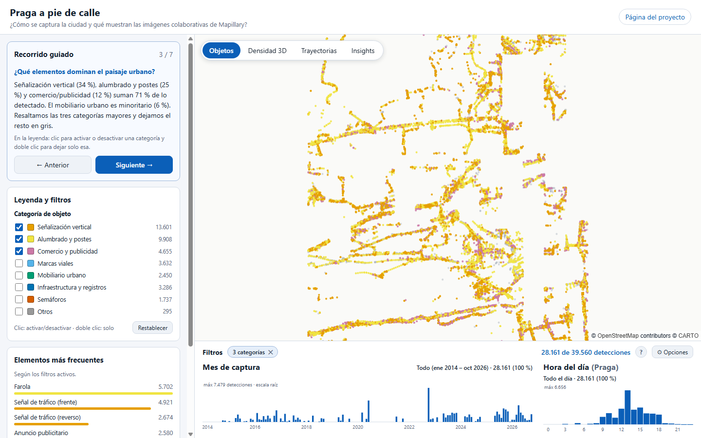
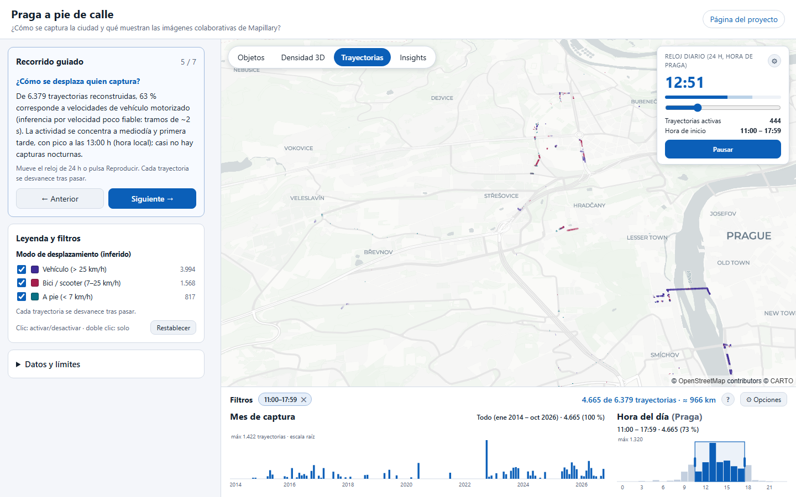

1. Introducción
Mapillary reúne millones de fotografías de calle aportadas por voluntarios, empresas y municipios, y extrae de ellas objetos urbanos (farolas, señales, pasos de peatones) con visión por computador. Estos datos se usan en inventarios de infraestructura y en análisis de movilidad con una suposición implícita: que el mapa describe la ciudad. Sin embargo, cada dato existe porque alguien capturó ese lugar en ese momento y con un dispositivo concreto, de modo que la cobertura puede estar muy sesgada [1].
Problema y audiencia. Queremos hacer visible ese sesgo en una zona concreta. La audiencia son analistas y estudiantes de datos geoespaciales y de movilidad urbana que consideran usar datos colaborativos; el propósito es evaluar, no decidir: ¿puedo confiar en estos datos para mi análisis, y para qué zonas, periodos y objetos? Contribuciones: (i) un pipeline reproducible de extracción, limpieza y reconstrucción de trayectorias; (ii) una aplicación con cuatro vistas coordinadas y series de tiempo diseñadas para datos muy asimétricos; (iii) un recorrido guiado que traduce siete preguntas analíticas en estados de la interfaz con cifras calculadas de los datos; y (iv) una discusión explícita de lo que estos datos no permiten afirmar.
2. Trabajo relacionado
Principios de interacción. El mantra de Shneiderman —visión general primero, zoom y filtro, detalles bajo demanda— [2] y la taxonomía de dinámicas interactivas de Heer y Shneiderman [3] (filtrar, seleccionar, coordinar vistas, guiar) estructuran nuestra interfaz: mapa general, filtros enlazados y tooltips.
Exploración de movimiento urbano. Ferreira et al. [4] combinan consultas espacio-temporales y mapas para explorar viajes de taxi en Nueva York; nuestra combinación de filtro temporal, reloj y mapa sigue esa idea con datos mucho más escasos. Andrienko y Andrienko [5] muestran que agregar movimiento en celdas reduce el desorden frente a dibujar todas las líneas, lo que motiva nuestra densidad de recorrido por celdas hexagonales y los mapas de celdas por franja horaria.
Ajuste a la red vial y datos voluntarios. El map matching probabilístico de Newson y Krumm [6], implementado en motores como OSRM [7], permite alinear trazas ruidosas a las calles; también explica por qué datos escasos producen trazados poco fiables. Goodchild [1] describe la información geográfica voluntaria y sus particularidades de calidad y cobertura, y el conjunto Mapillary Vistas [8] documenta la taxonomía de objetos que agrupamos en categorías.
3. Datos y métodos
Fuente. Mapillary API v4 (map_features e images; CC BY-SA), consultada el 20 y 21 de octubre de 2026 sobre una cuadrícula de 0,005°. Se obtuvieron 39.564 detecciones (277 clases, 1.096 secuencias, 2014–2026; 4 fechas de 2006 se excluyen de la aplicación) en lon 14,350–14,415 y lat 50,050–50,130 (~4,6 × 8,9 km, oeste de Praga), y 76.225 imágenes con metadatos de cámara en la misma zona.
Transformaciones. Año, mes y hora se calculan en hora local de Praga. Las 277 clases se agrupan en siete categorías analíticas por prefijo. Las trayectorias se reconstruyen encadenando detecciones consecutivas de una misma secuencia con ≤ 15 s y ≤ 60 m entre sí; cada tramo se ajusta a la red vial con OSRM (radio de 25 m), se muestrea cada ~40 m y se clasifica por velocidad media (< 7, 7–25, > 25 km/h). El resultado son 6.379 trayectorias y ≈ 1.331 km reconstruidos. Todo el proceso es reproducible con cinco scripts y los datos procesados caben en ≈ 3 MB de JSON.
Implementación. Aplicación estática (HTML, CSS y JavaScript sin build) con deck.gl 8.9 y MapLibre GL 3.6; las series de tiempo son SVG propio. Se publica en GitHub Pages.
4. Diseño de la visualización
Disposición. El mapa es el lienzo principal. Un panel izquierdo contiene solo insights (recorrido guiado y ranking de clases) y la leyenda, que es también el filtro; las series de tiempo ocupan una barra inferior de altura fija para que el mapa no se desplace al filtrar.
Vistas. Objetos: puntos coloreados por categoría con el resto en gris opcional. Densidad 3D: hexágonos de ~180 m con altura y tono proporcionales a los kilómetros de trayectoria, no a puntos (los puntos indican dónde hay datos, no dónde hay tráfico). Trayectorias: estelas que se desvanecen, para no sugerir tráfico permanente, con un reloj de 24 h en el que cada trayectoria aparece a su hora de inicio. Insights: tres mapas sincronizados para mañana (04:00–10:59), tarde (11:00–17:59) y noche (18:00–23:59), con celdas hexagonales de ~240 m coloreadas del amarillo al rojo según los kilómetros de recorrido (cinco clases, misma escala en las tres franjas, con su leyenda).
Codificación de color. La paleta categórica de Okabe e Ito [9], segura para daltonismo, se reserva a las categorías de objeto; los modos de desplazamiento usan otros tonos y la densidad una rampa neutra, de forma que ningún color significa dos cosas.
Series enlazadas. Una serie mensual (2014–2026) y una serie por hora filtran el mapa mediante selección por arrastre con bordes ajustables y teclado; la serie por hora muestra solo el periodo elegido. Cada serie ignora su propio filtro al calcular los recuentos, de modo que se ve qué se pierde al estrechar la selección. Como un solo mes domina los datos, la serie mensual ofrece escala raíz (por defecto), logarítmica o lineal, tooltip con valor y porcentaje, clic en el eje para elegir un año completo, y un menú de opciones con la escala, atajos («año con más datos», «últimos 12 meses») y un recorrido animado de una ventana de meses. Los filtros activos se resumen como chips que se quitan con un clic, y la leyenda filtra con clic (activar o desactivar) y doble clic (dejar solo esa categoría).

5. Resultados
5.1 La captura está muy concentrada en el tiempo
2022 aporta 10.446 detecciones (26,4 %), 2020 6.076 (15,4 %) y 2025 5.764 (14,6 %); 2014 y 2021 casi no aportan (27 y 316). Por mes, octubre de 2022 concentra el 26,0 % y los cinco meses mayores suman el 52,3 %. Con escala lineal el resto de la serie queda plano, lo que motivó la escala raíz. Por hora, el 23 % de las detecciones ocurre a las 13:00 y casi no hay capturas entre las 22:00 y las 08:00.
5.2 Dominan pocos tipos de objeto
La señalización vertical (34,4 %), el alumbrado y los postes (25,0 %) y el comercio y la publicidad (11,8 %) suman el 71,2 %; el mobiliario urbano es el 6,2 %.
| Categoría | Detecciones | % | Categoría | Detecciones | % |
|---|---|---|---|---|---|
| Señalización | 13.601 | 34,4 | Infraestructura | 3.286 | 8,3 |
| Alumbrado y postes | 9.908 | 25,0 | Mobiliario urbano | 2.450 | 6,2 |
| Comercio y publicidad | 4.655 | 11,8 | Semáforos | 1.737 | 4,4 |
| Marcas viales | 3.632 | 9,2 | Otros | 295 | 0,7 |

5.3 El recorrido se concentra en pocas calles
Medido con trayectorias (≈ 1.331 km), el 40,6 % del recorrido cae en el 10 % de las celdas de ~100 m recorridas (1.289 celdas). Con puntos de detección el valor es similar (39,5 %), pero los puntos miden dónde hubo datos y no dónde hubo tráfico.
5.4 El día se reparte de forma muy desigual
Entre 04:00 y 24:00 se reconstruyen ≈ 1.327 km: la tarde concentra el 73 % (4.665 trayectorias, ≈ 966 km), la mañana el 16 % (1.054; ≈ 217 km) y la noche el 11 % (640; ≈ 144 km). Dentro de cada franja, el 10 % de las celdas más recorridas reúne el 37 % (mañana), el 41 % (tarde) y el 38 % (noche) del recorrido. Los tres mapas comparten la misma escala de color (clases por percentiles de todas las celdas: ≤ 0,9, 0,9–2, 2–4, 4–7 y > 7 km por celda), así que los colores se comparan directamente entre franjas; el peso de cada una se lee además en su encabezado. Veinte trayectorias ocurren entre 00:00 y 04:00 y no se muestran.

5.5 Imágenes y detecciones no evolucionan igual
2020 es el año con más imágenes en la zona (15.259) pero 2022 el de más detecciones (10.446 con 7.770 imágenes): la razón detecciones por imagen va de ≈ 0,4 a ≈ 1,3. Por fabricante, Samsung aporta el 27,2 % de las imágenes, Mosaic51 el 19,9 % y «desconocido» el 12,6 %. No podemos atribuir la diferencia a un dispositivo, a un cambio de procesamiento o a una ruta distinta; es una pregunta abierta.

6. Discusión
Qué aprendimos. La cobertura es resultado de campañas puntuales más que de una observación sistemática: pocos meses, pocas calles y unas horas del día concentran los datos. Por eso la pregunta previa a cualquier lectura urbana es «¿quién capturó, cuándo y con qué?». Fortalezas. Las vistas coordinadas y la leyenda-filtro permiten pasar de la visión general al detalle sin cambiar de pantalla, y las escalas ajustables resuelven un problema de legibilidad real de los datos.
Evaluación informal. No se realizó un estudio con usuarios. La única evidencia es la revisión de diseño con el profesor, cuyos comentarios llevaron a doce cambios: eliminar las líneas permanentes de trayectoria, medir el tráfico con trayectorias y no con puntos, sustituir los selectores por series de tiempo con selección, separar las paletas de color, fusionar leyenda y filtros, usar fondo claro y hacer más interactiva una serie «muy plana». Todos los cambios se documentan en el repositorio.
Limitaciones. (i) Solo se descargaron 2 de los 5 lotes de map_features planeados, por lo que el área es menor y no es representativa de toda Praga. (ii) Las trayectorias son una reconstrucción a partir de detecciones: los tramos duran 2,1 s de mediana, la posición es la del objeto y no la de la cámara, y el 25 % de las velocidades supera los 80 km/h; por tanto el modo de desplazamiento (63 % «vehículo») es una inferencia débil y no un hecho. (iii) Las detecciones son automáticas y no un censo. (iv) Se usa el perfil de automóvil de OSRM para todos los modos. (v) El reloj superpone todas las fechas y muestra un ciclo diario, no un día concreto. (vi) Las visualizaciones 3D no incluyen edificios; la altura solo codifica el valor.
7. Trabajo futuro y conclusión
Pendientes: completar la descarga de los lotes restantes; recalcular las velocidades con las posiciones y horas de las imágenes (computed_geometry, captured_at), que corresponden a la cámara; explicar la discrepancia entre imágenes y detecciones por dispositivo; comparar dos periodos lado a lado; explorar las 277 subcategorías; y evaluar con usuarios. Conclusión: los datos colaborativos de calle describen, ante todo, a quienes capturan; una visualización que muestra su concentración en el tiempo, el espacio y el día ayuda a juzgar para qué análisis son fiables.
Agradecimientos
Datos © contribuyentes de Mapillary (CC BY-SA). Mapa base © CARTO y © OpenStreetMap contributors. Ajuste a la red con OSRM. Bibliotecas: deck.gl y MapLibre GL. El código fue desarrollado con asistencia de herramientas de IA, revisado y comprendido por el autor. Repositorio: github.com/jeffHQ/NewMapillaryVisualization.
Referencias
- M. F. Goodchild, «Citizens as sensors: the world of volunteered geography», GeoJournal 69(4), 211–221, 2007.
- B. Shneiderman, «The eyes have it: a task by data type taxonomy for information visualizations», IEEE Symposium on Visual Languages, 1996.
- J. Heer, B. Shneiderman, «Interactive dynamics for visual analysis», Communications of the ACM 55(4), 2012.
- N. Ferreira, J. Poco, H. T. Vo, J. Freire, C. T. Silva, «Visual exploration of big spatio-temporal urban data: a study of New York City taxi trips», IEEE TVCG 19(12), 2013.
- N. Andrienko, G. Andrienko, «Spatial generalization and aggregation of massive movement data», IEEE TVCG 17(2), 2011.
- P. Newson, J. Krumm, «Hidden Markov map matching through noise and sparseness», ACM SIGSPATIAL GIS, 2009.
- D. Luxen, C. Vetter, «Real-time routing with OpenStreetMap data», ACM SIGSPATIAL GIS, 2011.
- G. Neuhold, T. Ollmann, S. Rota Bulò, P. Kontschieder, «The Mapillary Vistas dataset for semantic understanding of street scenes», ICCV, 2017.
- M. Okabe, K. Ito, «Color Universal Design (CUD): how to make figures and presentations that are friendly to colorblind people», 2008.